Hermes Duet · blueprint · roadmap complete · 2026-10-29 · 2b90aa3
Your agent, in duet — on your phone.
Hermes Duet is a PWA front end for a Hermes agent: one thread for chat and approval cards, a morning brief, background tasks, standing pages, and a live view of the browser the agent drives. This page captures every screen and modal, driven in real Chrome against a seeded demo server.
Everything below came from a local run in real Chrome on this Mac. Screenshots are real captures by the harness in tools/blueprint/; the demo server (bun scripts/demo.ts --reset) holds seeded content, the scheduler off. Nothing is estimated.
bun test, 43 files)New in this pass: the roadmap, finished
Every open roadmap item, worked in order, each with its own harness script. Product changes: three surgical fixes (below). Everything else is new evidence.
Live browser: frames flow, taps land
The demo server owns a real headed Chrome (own debug port and throwaway profile). tools/blueprint/live.mjs pairs, opens the pane, navigates to a local fixture through the pane's own URL bar, taps it, and measures the repaint in-page. 6/6.
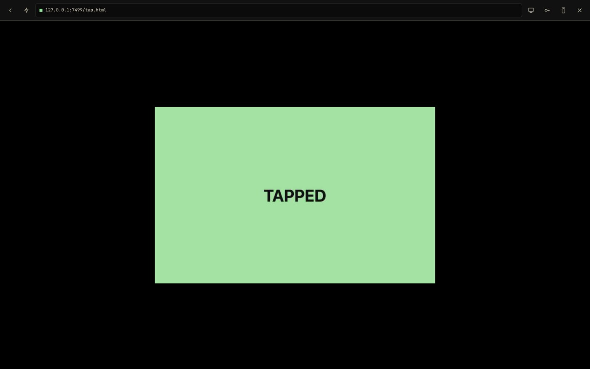
live.mjs now closes leftover tabs before starting (hermetic reset check).- Limits: the driven window is a test profile, not the user's; long-press/scroll/text input go through the same
input()path but only tap is asserted end to end.
Card taps change state
tools/blueprint/approvals.mjs (fresh seed, runs after sweep) approves the Dana draft and answers the Thursday question through the real buttons. 7/7: SENT 11:06 AM, YOU CHOSE “YES, MOVE IT”, nothing pending, needs-you badge clears while the running-task badge correctly stays at 1.
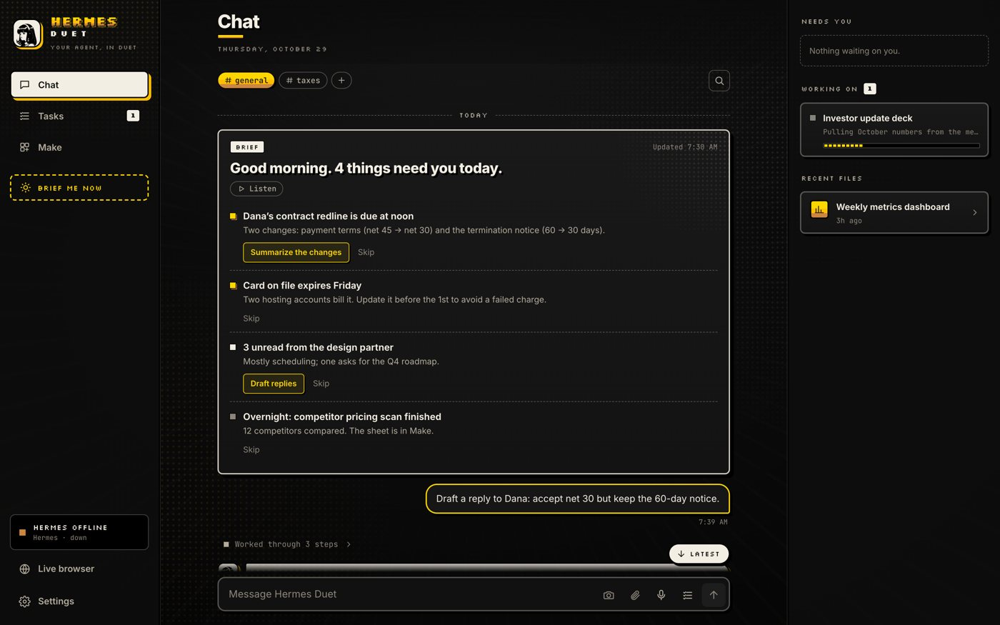
The pairing gate holds
tools/blueprint/pairing.mjs: wrong code refused with words, fresh code redeems once (200) and dies on reuse (401), cookie-less message and card actions refused (401), health stays public. 7/7. The 8-guess lockout is deliberately not tripped — it would poison the shared demo seed.
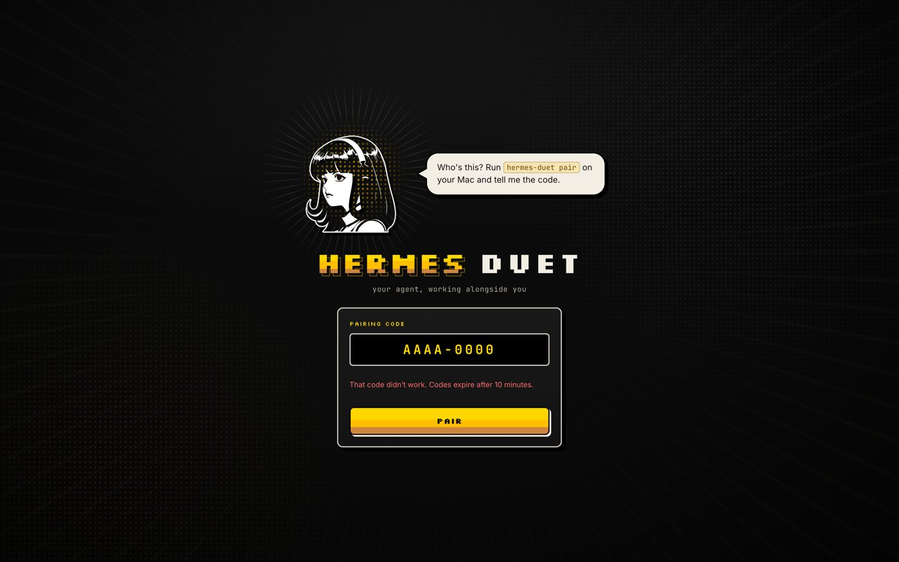
Recovery: offline banner, restart resync
tools/blueprint/recovery.mjs points the demo at a dead Hermes port, then stops and restarts the server mid-session. 4/4: “Hermes offline” status instead of a spinner, “Reconnecting” while down, resync keeps every card and duplicates none (a queued turn's retry card legitimately arrives mid-outage — the check asserts keep-all + no-dupes, not frozen counts).
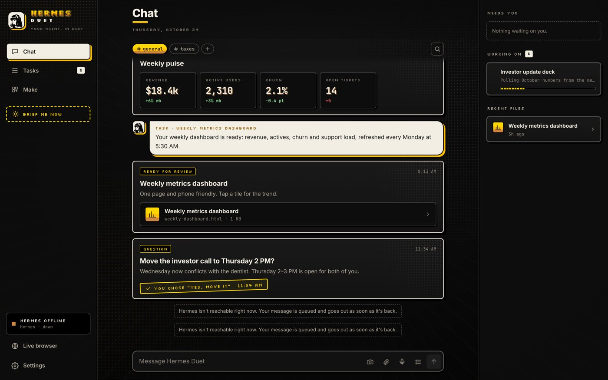
Channels: #taxes end to end, plus two real bugs
tools/blueprint/channels.mjs creates #taxes in the sheet, posts in it, finds the message through search and jumps to it. 6/6. Doing it surfaced two product bugs, both fixed:
- The channels sheet lived under the rail. It rendered inside
.main(stacking context z-index 1), so on ≥1280px the rail (z-index 2) painted over the sheet's right edge — the Create button was unclickable, verified withelementFromPoint. Fix: the sheet now renders at app level like every other modal (App.tsx,Channels.tsx). - A new channel dethroned general. The channel list ordered by recent activity, so #taxes sorted first and every
channels[0]assumption (default thread, archive guard, topic bar) pointed at the wrong channel. Fix: general first in SQL (db.ts) and in the live-update path (store.ts); harness asserts the strip order.
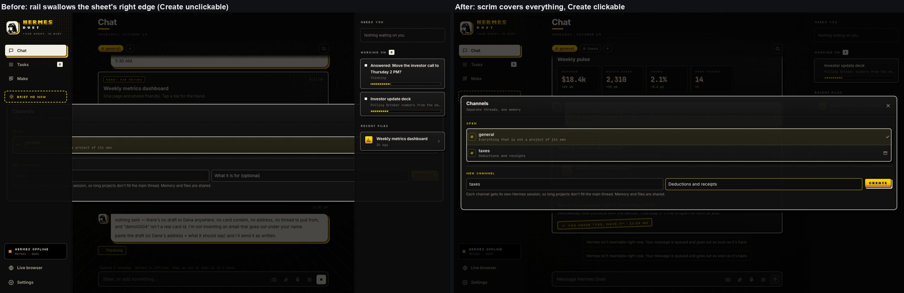
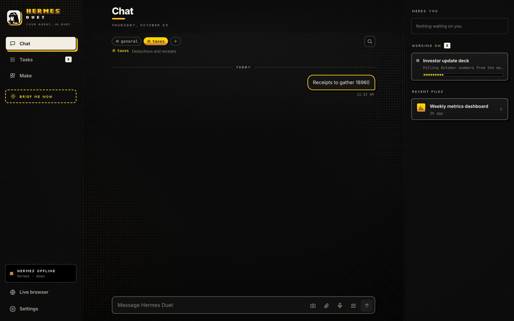
Keyboard and contrast, measured
tools/blueprint/a11y.mjs tab-walks the app (named, visible, focus-indicated stops; / focuses the composer) and computes WCAG contrast from computed styles. 10/10 — after one fix: timestamps sat at 4.25:1, so --faint lifted one step (#7a746a → #8b857a, same hue); body text ≥8.3, timestamps now 5.37.
Limits
- Push delivery to a physical device is untested — it needs the user's paired iPhone (blocked on user hardware, not attempted).
- Pairing-lockout behavior untested by design (would poison the shared seed).
- Long-press/scroll/text through the live pane go through the same tested
input()path but only tap is asserted end to end.
New in this pass: phone polish
A fresh-eyes audit of every tour screen at desktop and 390px widths (empty thread in a new channel, long topic bar, viewer/settings/search sheets on a small viewport, measured in-page: scroll widths, computed fonts, matchMedia). Three defects ranked by user impact, each with a failing-before harness check in tools/blueprint/polish.mjs that goes green after the fix. No roadmap deltas: the roadmap stays finished; this pass only fixes and proves.
Status pill no longer truncates on phones
At 390px the pill (.status-pill .status-text, max-width 92px) read “Hermes of…” — measured scrollWidth=112 vs clientWidth=92, 20px clipped — and the pill is the only status surface on phones (the sidebar is hidden). The demo idles in exactly that state (dead Hermes port), so every phone user saw the clipped warn state. The pill now renders a short label (Offline: sw=54 cw=54); the sidebar keeps the full text. Shorts cover every truncating state, measured: Reconnecting 103→Retrying, Writing your brief 143→Working, N in background 127→N running.
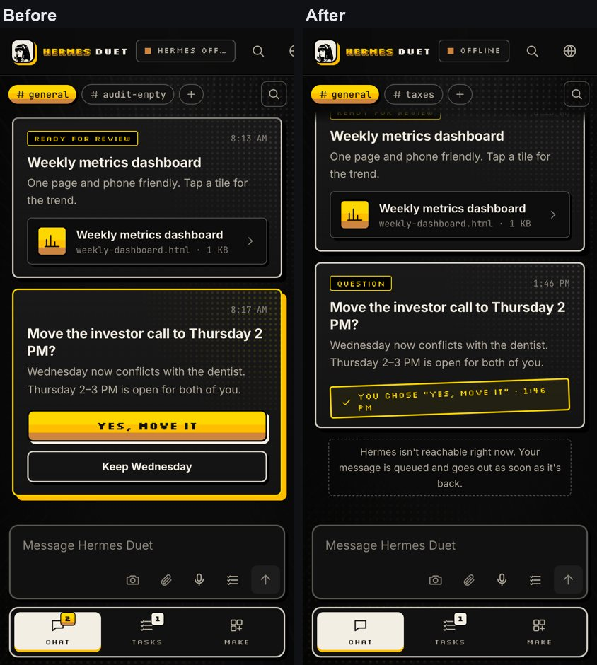
App.tsx (useStatus gains short); asserted by polish.mjs (sw <= cw at 390px).- Limits: the 92px cap still exists — a future longer label would clip again, and the harness would fail loudly rather than drift.
Search footer hints hidden on touch
The results sheet ended in “↑↓ move · ↵ open · esc close” on phones too (measured display=flex h=35 with matchMedia("(pointer: coarse)") === true): 35px of chrome for a keyboard that isn't there. The footer now hides under (pointer: coarse) — higher-specificity selector (.sheet.search-sheet .search-foot), since the base rule sits later in the file — and still shows on desktop with hits (h=35).
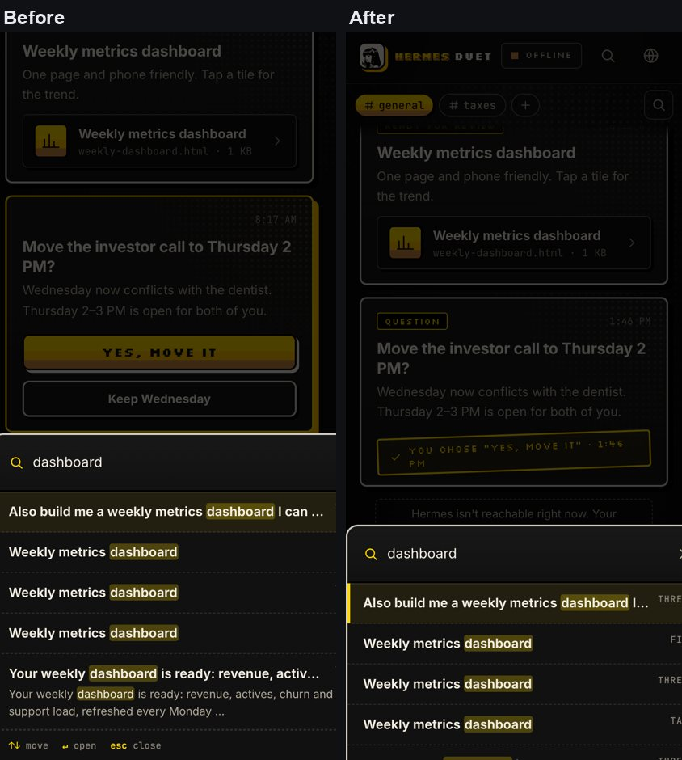
styles.css; asserted both ways by polish.mjs.- Limits: hybrid laptops with touchscreens report coarse+fine inconsistently — desktop Chrome keeps the hints, which is the safe direction.
Editable inputs stop inviting iOS zoom
The codebase already holds the ≥16px rule (composer textarea, approval draft, both commented “stops iOS zoom-on-focus”), but three editable inputs sat below it: brief/quiet time inputs at 13px, channel name/topic at 15px, live-pane URL bar at 13px. On iPhones every focus zoomed and the user had to pinch back. All three are 16px now; readonly display fields (webhook URL 11.5px mono) untouched.
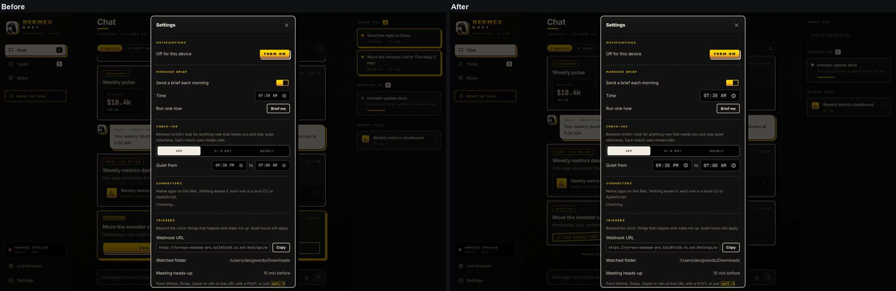
styles.css; polish.mjs asserts each computed font-size.- Limits: only proven by computed style, not on a physical iPhone (blocked on user hardware — same standing limit as push delivery).
How it was verified
- New harness
tools/blueprint/polish.mjs(patterned onsweep.mjs): 8 checks, 5 captures. First run on a fresh seed failed the 4 defect checks and passed the 3 desktop controls; after the fixes the same script passes 8/8 on a fresh seed. - Full final sequence on one fresh seed: sweep 24/24, live 6/6, channels 6/6, pairing 7/7, a11y 10/10, approvals 7/7, recovery 4/4, polish 8/8 — 72/72, no new console errors,
bun run typecheckandbun test(348 pass) clean. - Audit-only findings that were not defects: search-hit contrast re-measured with proper alpha blending (active row 4.52, rest ≥5.16 — passes); empty-channel topic truncates by design with ellipsis; viewer/settings sheets fit at 390px with no page-level sideways scroll.
New in this pass: polish
Two visual defects the bootstrap screenshots caught, fixed without changing any behaviour or the theme.
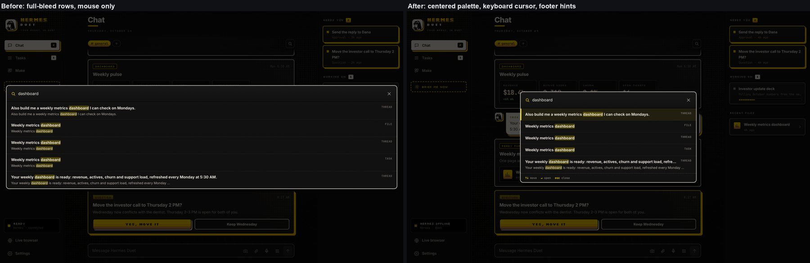
web/src/components/Channels.tsx; asserted by a harness check (echoes=0 of 5).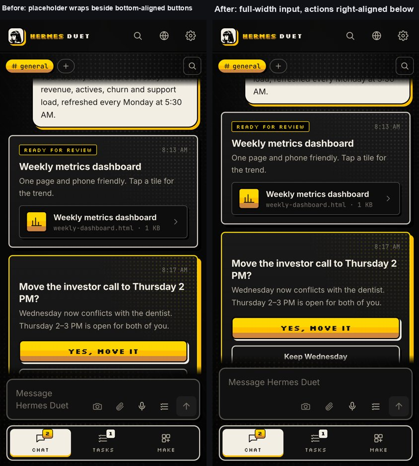
web/src/styles.css; asserted by a harness check (textarea=41px).How it was verified
- Rebuilt (
bun run build), re-ran the full sweep: 22/22, then looked at the new captures side by side with the bootstrap ones. - One capture artifact also fixed in the harness: tab screenshots now wait for
aria-selectedon the clicked tab, so the highlight can never lag a frame behind the content. - No app bug found in this pass: a suspect sidebar highlight in one bootstrap capture reproduced correctly on re-probe (DOM and pixels agree).
Limits
- Behaviour is unchanged: search ranking, snippets and composer actions work exactly as before — only redundant or awkward pixels moved.
Tour
Every screen and modal, in the order a user meets them: pairing, the thread, tasks, files, the viewer, search, settings, the live browser pane, and the 390px phone layout.
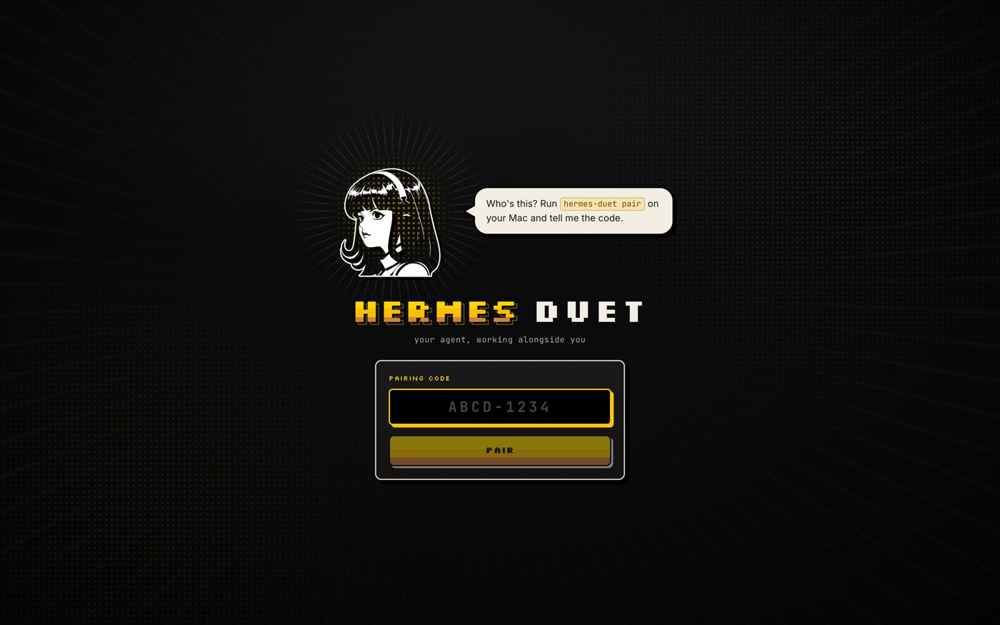
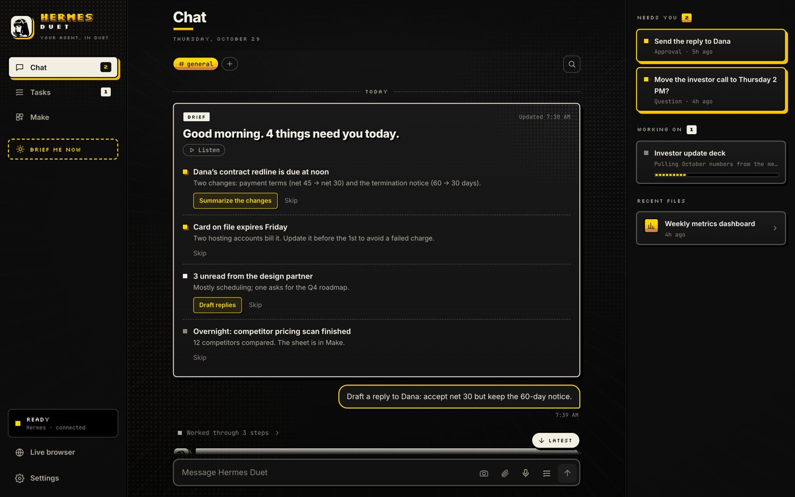
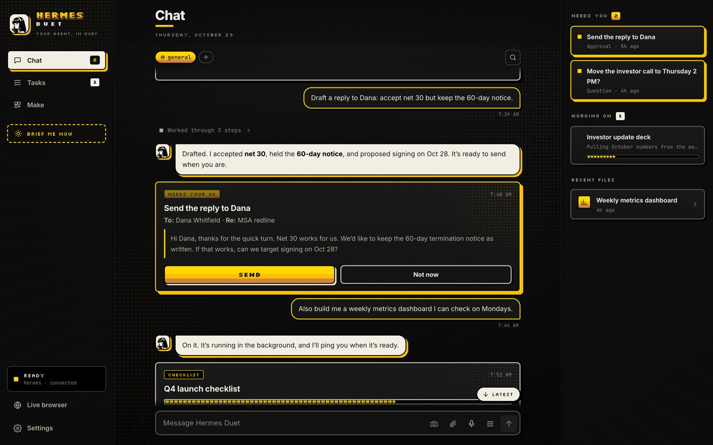
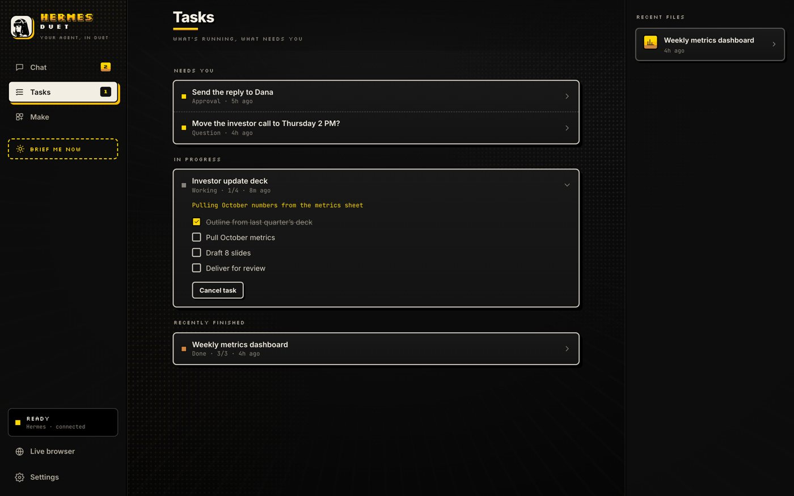
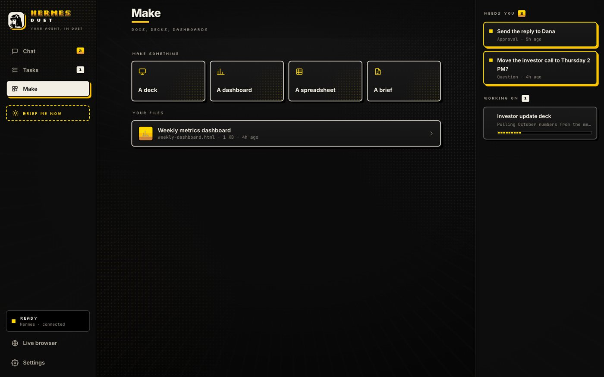
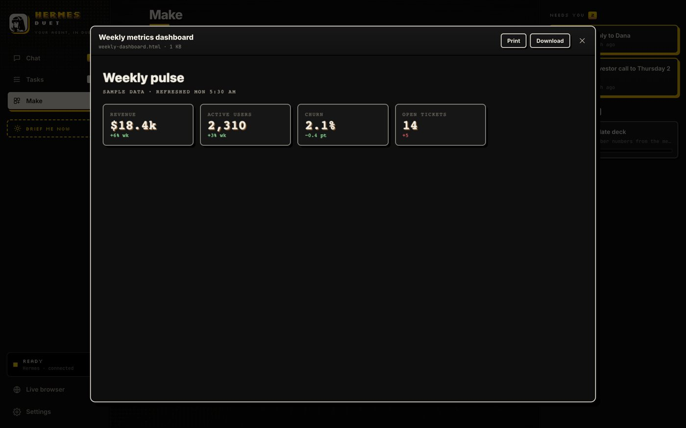
allow-scripts …, no allow-same-origin — asserted by the harness), with Print / Copy / Download.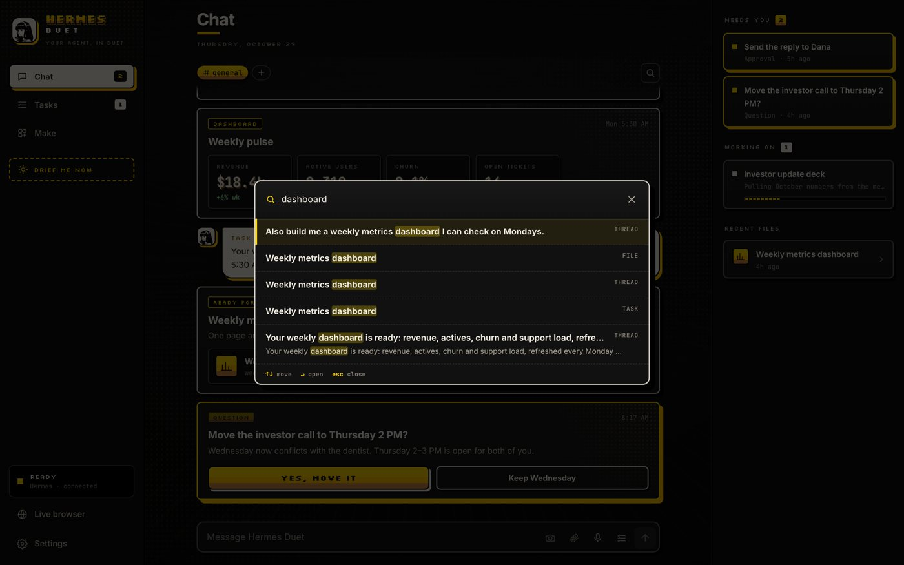
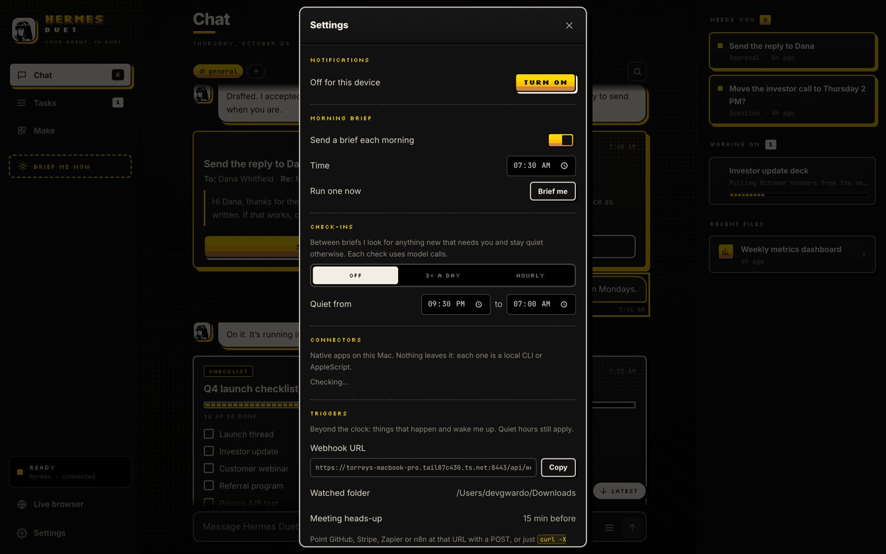
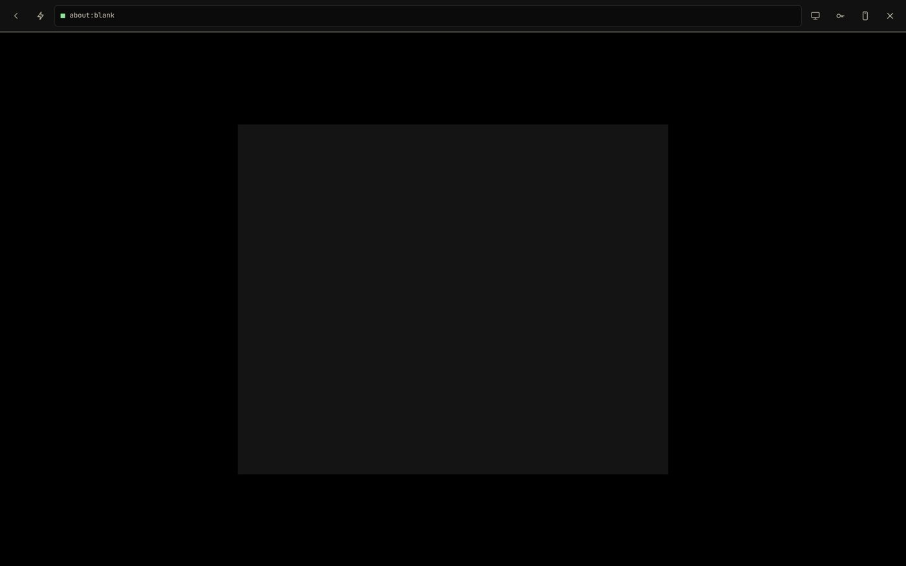
media/live-03-tapped.jpg).Phone width
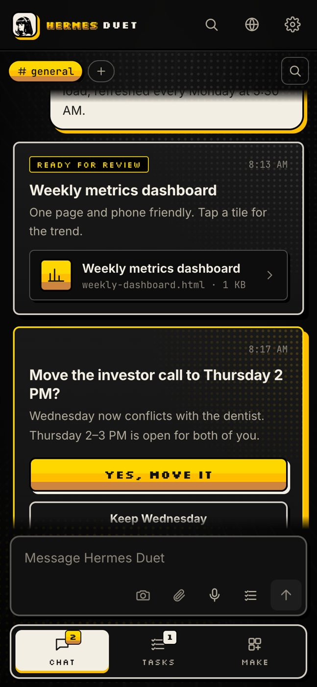
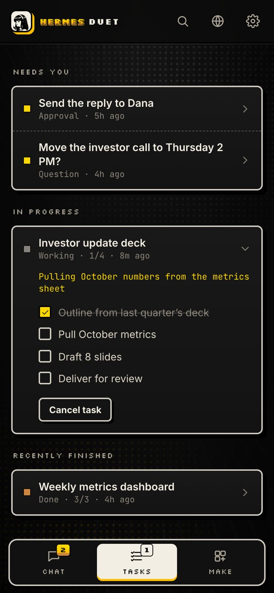
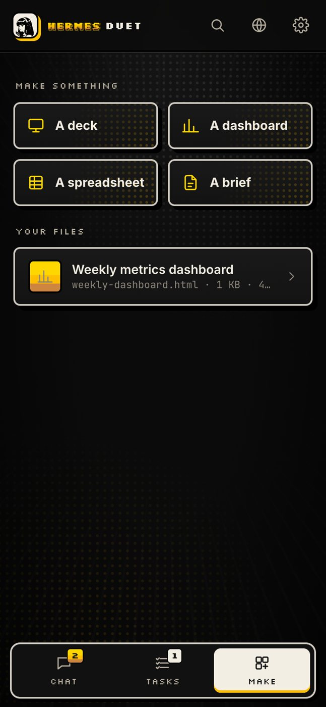
Architecture
One lane per Hermes session; the phone never talks to Hermes directly.
flowchart LR P["phone PWA"] --> D["Duet server (Bun + SQLite)\n:7456 app · :7457 internal"] D --> H["Hermes gateway\nPOST /v1/runs · /events · /steer · /stop"] H --> M["server/mcp-shim.ts\nMCP server 'duet'"] M --> D D --> C["agent-driven Chrome\nCDP frames over websocket"] C --> P
Thread & cards
web/src/components/Thread.tsxweb/src/components/CardView.tsxBrief, approval, payment, choice, checklist, metrics, file, handover cards in one conversation.
Tasks & files
web/src/components/TasksView.tsxweb/src/components/MakeView.tsxweb/src/components/Viewer.tsxBackground runs in their own Hermes sessions; deliverables render sandboxed with a postMessage bridge.
Modals
web/src/components/SettingsSheet.tsxweb/src/components/BrowserView.tsxweb/src/components/Channels.tsxSettings, live browser pane (JPEG frames in, CDP input out), ⌘K search overlay.
Server
server/index.tsserver/runner.tsserver/approval.tsLanes, scheduler (briefs, check-ins, quiet hours), approval/payment gates, webhooks, push.
Outputs
The one delivered file in the seed, opened through the real viewer and verified by the harness — not downloaded by hand.
| File | Format | Probe | Size | Verdict |
|---|---|---|---|---|
weekly-dashboard.html | HTML, sandboxed iframe | sandbox attr without allow-same-origin; 1 frame rendered | ~1 KB | pass |
Test results
The harness drives the real app in real Chrome with a disposable paired context per viewport and every non-local request aborted. Unit tests: bun test, 348 pass / 0 fail across 43 files. Build: bun run build clean.
| Run | Check | Measured | Result |
|---|---|---|---|
| sweep | Pair screen asks for a code | inputs=1 | pass |
| sweep | Pairing with a real code lands in the thread | code 22… accepted | pass |
| sweep | Thread shows the morning brief | 6 cards | pass |
| sweep | Thread shows a pending approval | pass | |
| sweep | Thread shows a pending question | pass | |
| sweep | Thread shows checklist + metrics cards | pass | |
| sweep | Approval card offers Approve / Not now | Send | Not now | pass |
| sweep | Tasks lists the running deck job | Send the reply to Dana · Move the investor call to Thursday 2 PM? · Investor update deck · Weekly metrics dashboard | pass |
| sweep | Tasks lists the finished dashboard job | Send the reply to Dana · Move the investor call to Thursday 2 PM? · Investor update deck · Weekly metrics dashboard | pass |
| sweep | Make lists the delivered dashboard | Weekly metrics dashboard | pass |
| sweep | Viewer renders the dashboard in a sandboxed frame | iframes=1 | pass |
| sweep | Viewer frame is sandboxed | allow-scripts allow-popups allow-popups-to-escape-sandbox allow-downloads allow-modals | pass |
| sweep | Search finds the dashboard | hits=5 | pass |
| sweep | Search rows don't echo the title as the snippet | echoes=0 of 5 | pass |
| sweep | Arrow keys move, cursor returns to the first hit | pass | |
| sweep | Enter opens the hit and lands in Chat | pass | |
| sweep | Settings shows the morning brief controls | time=07:30 | pass |
| sweep | Settings shows connectors + triggers | pass | |
| sweep | Live browser pane opens (demo has no Chrome to drive) | canvas | pass |
| sweep | Pairing cookie is HttpOnly | duet_device set | pass |
| sweep | Composer stays single-line at 390px | textarea=41px | pass |
| sweep | No sideways scroll at 390px | pass | |
| sweep | Visual evidence includes actual screenshots | 12 shots | pass |
| sweep | No unexpected console errors | only the expected logged-out /api/state 401 | pass |
| live | Driven Chrome starts with no leftover tabs | 0 left | pass |
| live | Live pane toolbar renders | pass | |
| live | Non-black frames flow from the driven Chrome | pass | |
| live | URL-bar navigation lands on the fixture | 127.0.0.1:7499 | pass |
| live | A tap through the pane repaints the driven page | mean abs diff=99.9 | pass |
| live | No unexpected console errors | clean | pass |
| channels | Channel sheet creates #taxes and the topic bar follows | taxes Deductions and receipts | pass |
| channels | General stays first in the strip | general | pass |
| channels | Message posted in #taxes appears in its thread | Receipts to gather 50833 | pass |
| channels | Search finds the #taxes message | hits=1 | pass |
| channels | Jump lands on the message | visible | pass |
| channels | No unexpected console errors | clean | pass |
| pairing | Wrong code is refused with words, not a blank shake | That code didn’t work. Codes expire after 10 minutes. | pass |
| pairing | Fresh code redeems (200) | status=200 | pass |
| pairing | Same code is dead on reuse (401) | status=401 | pass |
| pairing | Message without a device cookie is refused (401) | status=401 | pass |
| pairing | Card action without a device cookie is refused (401) | status=401 | pass |
| pairing | Health stays public (liveness needs no pairing) | status=200 | pass |
| pairing | No page errors during the refusal paths | clean | pass |
| a11y | "/" focuses the composer | {"tag":"TEXTAREA","inComposer":true} | pass |
| a11y | Tab order reaches interactive controls with names | 8 stops | pass |
| a11y | Every stop is visible | 8 visible | pass |
| a11y | Every stop shows a focus indicator | 8 with outline/shadow | pass |
| a11y | Contrast ≥ 4.5: .card-title | 17.01:1 | pass |
| a11y | Contrast ≥ 4.5: .bubble | 15.64:1 | pass |
| a11y | Contrast ≥ 4.5: .card .card-body | 8.72:1 | pass |
| a11y | Contrast ≥ 4.5: .status-text | 8.37:1 | pass |
| a11y | Secondary text contrast ≥ 4.5 too | .card-meta=5.37:1 .msg-time=5.37:1 | pass |
| a11y | No unexpected console errors | clean | pass |
| approvals | Seed holds a pending approval and a pending question | approvals=1 choices=1 | pass |
| approvals | Rail badge counts what needs you | badges=2,1 | pass |
| approvals | Approval decides and says what happened | SENT · 1:46 PM | pass |
| approvals | Choice decides and names the chosen answer | YOU CHOSE “YES, MOVE IT” · 1:46 PM | pass |
| approvals | Nothing stays pending | pending=0 | pass |
| approvals | Needs-you badge clears, running-task badge stays | chat=0 tasks=1 | pass |
| approvals | No unexpected console errors | clean | pass |
| recovery | Hermes-down surfaces as a status, not a spinner | Hermes offline / Offline | pass |
| recovery | Dropped connection shows Reconnecting | pass | |
| recovery | Thread resyncs without duplicating cards | before=12 after=13 dupes=0 | pass |
| recovery | No page errors across the outage | clean | pass |
| polish | Settings time inputs are >=16px (no iOS zoom) | time=16px | pass |
| polish | Channel form inputs are >=16px (no iOS zoom) | 16px,16px | pass |
| polish | Search footer hints show on desktop | h=35 | pass |
| polish | Live pane URL bar is >=16px (no iOS zoom) | 16px | pass |
| polish | Status pill fits at 390px | Offline sw=54 cw=54 | pass |
| polish | Search footer hints hidden on touch | display=none h=0 | pass |
| polish | No sideways scroll at 390px | pass | |
| polish | No unexpected console errors | clean | pass |
Performance
| Measure | Value |
|---|---|
sweep.jsHeapMB | 6.1 |
sweep.screenshots | 12 |
sweep.firstRenderMs | 83 |
live.tapRepaintDiff | 99.9 |
live.screenshots | 3 |
channels.screenshots | 3 |
pairing.screenshots | 1 |
a11y.contrast | {".card-title": 17.01, ".bubble": 15.64, ".card .card-body": 8.72, ".status-text": 8.37, ".card-meta": 5.37, ".msg-time": 5.37} |
a11y.stops | 8 |
approvals.screenshots | 2 |
recovery.screenshots | 3 |
Measured in-page: first render is navigation-to-pair-screen on a cold demo server; JS heap after pairing and a full thread render. No perf budget is enforced yet.
Fixed in this pass
Product bugs the harness proved, then the fixes. Harness-only fixes from the bootstrap pass stay listed after them.
| Issue | Cause | Fix |
|---|---|---|
| Status pill truncated the warn state on phones | .status-text capped at 92px under 420px; “Hermes offline” measured sw=112 cw=92 — and the pill is the only status surface when the sidebar is hidden. | Short pill labels (Offline, Retrying, Working…→Working, N running) via useStatus().short; sidebar keeps full text (App.tsx); harness asserts sw<=cw at 390px. |
| Search footer showed keyboard hints on touch phones | “↑↓ move · ↵ open · esc close” rendered (display=flex h=35) with (pointer: coarse) === true. | Hidden under (pointer: coarse) with a higher-specificity selector (styles.css); desktop keeps the hints; asserted both ways. |
| Three editable inputs sat below the 16px iOS no-zoom rule | Settings time inputs 13px, channel form 15px, live-pane URL bar 13px — the composer and approval draft already documented ≥16px. | Bumped to 16px (styles.css); readonly webhook field untouched; harness asserts each computed size. |
| Channels sheet buried under the rail on wide screens | Rendered inside .main (stacking context z-index 1); rail z-index 2 painted over it — Create unclickable, proven by elementFromPoint. | Renders at app level like every other modal (App.tsx, Channels.tsx); channels.mjs clicks Create for real. |
| New channel dethroned general | List ordered by recent activity; every channels[0] assumption pointed at #taxes after creating it. | General first in SQL (db.ts) and the live-update path (store.ts); harness asserts strip order. |
| Timestamps at 4.25:1 contrast | --faint too dark for 11px text on the card surface (computed in-page). | #7a746a → #8b857a, same hue; a11y.mjs asserts ≥4.5 everywhere incl. secondary text. |
| Sweep died clicking the search button: “element is not visible” | At 1600px the topbar icon buttons hide via CSS; the only search entry point is the channel strip, which renders on the Chat tab only — the sweep had moved to Make. | Navigate back to Chat first; click .channel-search. Sidebar buttons by text for Settings / Live browser. |
| Sweep timed out after closing the viewer | Viewer iframe eats the Escape keypress, so the modal never closed and later clicks hit the backdrop. | Close via the header Close button and wait for detach. |
| Search rows repeated the title as the snippet | Server falls back to title when FTS returns no body context, so short messages and file/task names rendered twice. | Skip the snippet line when it equals the title (Channels.tsx); harness asserts echoes=0. |
| Phone composer squeezed the placeholder into two lines | Five 38px buttons left ~131px for the input at 390px; buttons bottom-aligned beside a wrapped textarea. | Below 560px the input takes the full row with actions right-aligned underneath (styles.css); harness asserts textarea=41px. |
| Search was a full-bleed list with no keyboard path | The sheet never got a desktop max-width, and rows were mouse-only — no cursor, no Enter, no hints. | Centered 700px palette with gold-edge cursor row, ↑↓/↵/hover support and a footer hint (Channels.tsx, styles.css); harness drives arrows+Enter end to end. |
| Pair screen needed a little taste | Static hero: the wordmark and tagline just sat there. | Looping scramble-decode on the wordmark (band echo mirrored via data-text) and tagline (Decode in Manga.tsx); monospace pixel font means zero reflow, static under reduced-motion, plain strings for screen readers. Harness waits for the settle before capturing. |
| Settings brief-time check failed though the pixels showed 07:30 | innerText applies CSS text-transform (headings are uppercase) and omits <input> values. | Case-insensitive heading match; assert the time from inputValue(). |
Roadmap
Everything below shipped in the roadmap-completion pass above — kept here as the ranked record. Size: S under half a day, M 1–2 days, L most of a week.
P1 · Live browser, exercised done
done Stream a real page through the pane
- Evidence
media/live-03-tapped.jpg: fixture flips gold→green through a real tap;live.mjs6/6.- Approach
- Demo-owned Chrome on its own debug port + throwaway profile, local fixture, in-page repaint measurement.
- Size
- M
P2 · Unhappy paths, covered done
done Approve / decline / answer through the cards
- Evidence
media/approvals-after.jpg: SENT + YOU CHOSE lines, badges correct;approvals.mjs7/7.- Approach
- Fresh seed, real button taps, decision + rail assertions.
- Size
- S
done Pairing failures
- Evidence
media/pairing-error.jpg;pairing.mjs7/7: wrong code, reuse 401, cookie-less 401s, public health.- Approach
- UI refusal + raw-status API probes. Lockout deliberately untested (poisons the seed).
- Size
- S
done Hermes-offline + restart recovery
- Evidence
media/recovery-resynced.jpg;recovery.mjs4/4: offline status, Reconnecting, keep-all + no-dupes resync.- Size
- S
done Multi-channel threads
- Evidence
media/channels-taxes.jpg;channels.mjs6/6, incl. the two product bugs it surfaced.- Size
- S
done Accessibility pass
- Evidence
a11y.mjs10/10: keyboard operability, focus indicators, computed contrast ≥4.5 everywhere.- Size
- S
Run & reproduce
bun run build python3 ~/.agents/skills/blueprint/scripts/devserver.py start \ --url http://127.0.0.1:7466/ --expect "Hermes Duet" \ --cwd /Users/devgwardo/hermes-duet -- env DUET_CHROME_PORT=9334 \ "DUET_CHROME_PROFILE=/Users/devgwardo/hermes-duet/blueprint-out/chrome-profile" \ DUET_HERMES_URL=http://127.0.0.1:9 bun scripts/demo.ts --reset export APP_URL=http://127.0.0.1:7466/ BP_OUT=/Users/devgwardo/hermes-duet/blueprint-out for s in sweep live channels pairing a11y approvals recovery; do node tools/blueprint/$s.mjs || echo "$s FAILED" done bun test # 274 pass, 0 fail